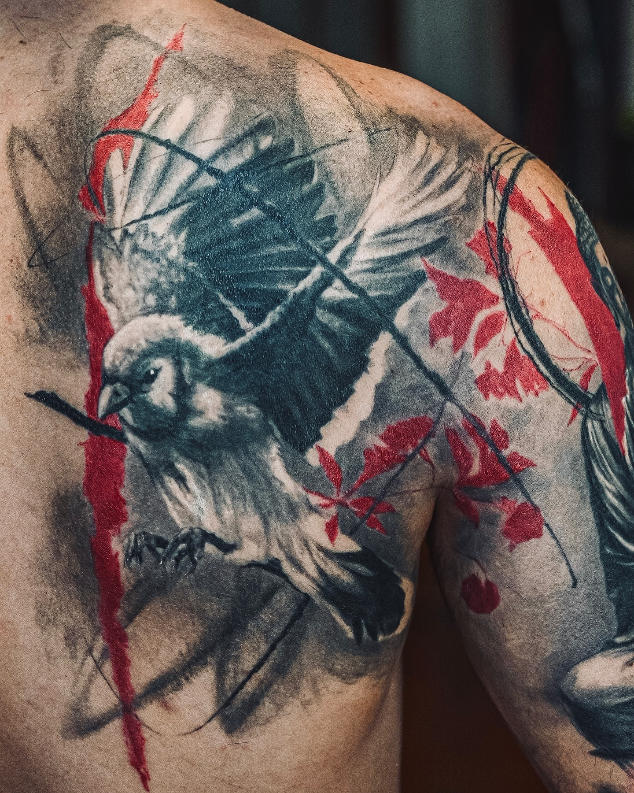
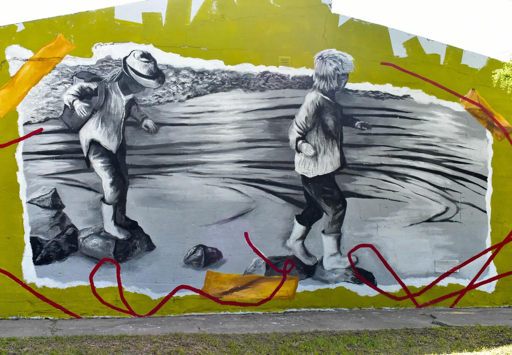

Sobre mí
Fusion of Black and grey, Trash Polka & Graffiti art
Galería




Contacto
Conecta conmigo para conocer mi trabajo más reciente.
Ver en InstagramFusion of Black and grey, Trash Polka & Graffiti art
Fusion of Black and grey, Trash Polka & Graffiti art


Conecta conmigo para conocer mi trabajo más reciente.
Ver en Instagram